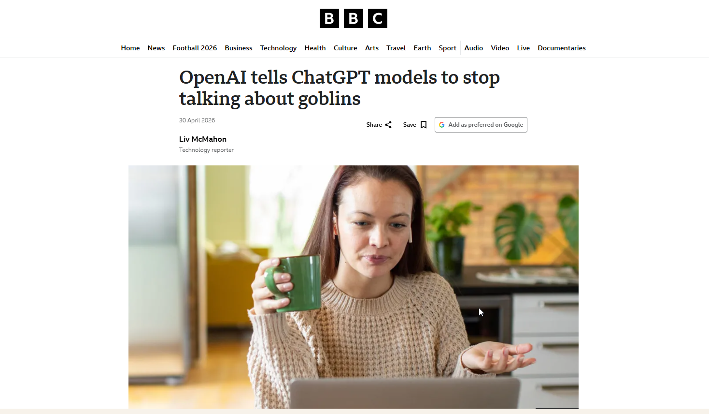

Understand what AI bias is, where it comes from, and how to recognize it in a real interaction.
Curious Beginners • Session 1
Bias in AI
This section defines bias, shows where it comes from, and explains how to recognize it in real work instead of treating it like a theoretical risk.
Hallucination is the AI being wrong. Bias is the AI being consistently skewed in a direction shaped by its training data or hidden instructions.
Bias in AI
The following section covers what AI bias is, where it comes from, and how to recognize it in a real interaction.
Training Data Bias
Think through metaphor
If you only ever read newspapers from 1950, you'd give very 1950 answers about medicine, science, and the world. You wouldn't be lying — you'd just be working from an incomplete picture, and you wouldn't know what you were missing. AI works the same way.
An AI learns from text. Whatever text it was trained on shapes everything it knows — and everything it doesn't. If the training material comes mostly from one time period, one culture, one industry, or one point of view, the AI's responses will reflect that whether anyone intended it or not.
Content placeholder
How to deal with training data bias in practice. Suggested addition: teach participants to probe an AI's edges by asking about niche domains (e.g., MVPD-specific workflows, political advertising regulations) where training data is sparse. The gap between confident and hedged responses is often diagnostic.
System Prompts and Hidden Instructions
Your prompt is never the only input. AI tools always have additional instructions added on the backend before your message is processed — these are called system prompts, and in most cases you cannot see them.

There is no reason to assume these instructions are malicious. Most are practical — be helpful, be polite, stay on topic. But bias doesn't have to be intentional to affect your output. An AI told to always validate the user's ideas will do exactly that — even when the idea has problems.
- Name the bias directly. Starting with "Challenge my assumptions on this" works surprisingly well.
- Cross-check across tools. If something feels one-sided, run the same question through a different AI tool.
- Treat confident agreement with skepticism. An AI that never pushes back is probably set up that way.
🔒 A note on security
System prompts are one part of a broader picture of AI and cybersecurity risk — including what data you share, where it goes, and who can access it. This is covered separately. (Further reading — [placeholder])
Copy prompt
Challenge my assumptions on this.
Security note
System prompts are one part of a broader picture of AI and cybersecurity risk — including what data you share, where it goes, and who can access it. Keep that distinction in mind when you use AI tools that are configured by someone else.
Two Types of Bias — Side by Side
Use the comparison below to identify which type of bias may be affecting a response.
| What it does | Training Data Bias | System Prompt Bias |
|---|---|---|
| Where it comes from | What the AI learned during training | Hidden instructions set before you start |
| Who controls it | The organization that built the AI | Whoever deployed or configured the tool |
| How it shows up | Gaps, blind spots, outdated or narrow views | Consistent slant, topic avoidance, or hidden agenda |
| How to spot it | Ask about edge cases or things outside its world | Notice if answers keep bending the same direction |
In practice
Bias doesn't announce itself. The output will sound confident and complete regardless of whether it's skewed. The habit to build is asking what's missing, not just evaluating what's there — and cross-checking when the stakes are high.
Ampersand Spotlight
Below are department-specific examples showing when search is a better fit and when AI is a better fit. All in the context of Ampersand!
| Departament | Where bias shows up | What can go wrong |
|---|---|---|
| Traffic & Ad Operations | Drafting an SOP for a makegood workflow built from the wrong industry norms | A new hire learns a process with a fundamental gap |
| Account Management / Sales | A competitive positioning summary that subtly validates digital-first assumptions | A pitch deck reinforces client skepticism about multiscreen TV |
| Political Advertising | Compliance details for a specific market with unusual or changing rules | A wrong summary is used for a sensitive compliance decision |
| Finance | Summarizing contract clauses through a generic commercial lens | An unusual carve-out gets omitted or softened |
| HR & People | Drafting job descriptions from skewed training norms | Subtly biased job descriptions narrow the candidate pool |
| Marketing & Comms | Feedback on an audience frame that skews urban, coastal, or tech-adjacent | A campaign is optimized against a misread audience |
Practice: Spotting Bias
Reading about bias is one thing. Recognizing it in a live response is another. Use this activity to test how bias shows up in practice.
Is this biased?
Describe a task or paste an AI response from your work. The activity will identify potential bias, explain where it might come from, and suggest how to pressure-test it.
- Use up to 4 messages per session.
- Reset to start a fresh thread.
- Try responses from tools you already use at work.
Paste an AI response or describe a task. The activity will flag potential bias and tell you how to test for it.
Conclusion & Reflections
Take a moment to reflect — it's what makes the learning stick.
- A biased AI sounds exactly like an unbiased one. Confidence is not accuracy.
- Two types to know: training data bias (what it learned) and system prompt bias (how it was set up).
- Spotting bias starts with noticing when something feels off and knowing how to probe it.
- Have you ever received an AI response that felt slightly off but you couldn't explain why? Could it have been one of these two bias types?
- If you were setting up an AI tool for your team, what instructions would you want to be transparent about upfront?